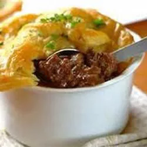

Steak and Kidney Pie

Description
This steak and kidney pie is a meal in itself! Perfectly seasoned beef and potatoes simmer beneath a flaky crust for a comforting, hearty old-fashioned pie. I like to use milder flavored lamb kidneys instead of beef.
Ingredients
- 1 pound fresh lamb kidneys
- 2 tablespoons butter or lard
- 2 pounds round steak, cubed
- 2 onions, chopped
- 2 teaspoons salt
- 2 teaspoons Worcestershire sauce
- ½ teaspoon dried thyme
- ¼ teaspoon ground black pepper
- 1 bay leaf
- 2 cups water, divided
- 4 cups diced potatoes
- 6 tablespoons all-purpose flour
- 1 recipe pastry for a 9 inch single crust pie
Steps
- Remove fat and membrane from the kidneys; cut them in half and remove any white tissue in the center; dice into chunky pieces.
- Heat butter or lard in a large pot over medium heat. Add diced kidney and steak; cook and stir until beef is browned. Stir in onions and season with salt, Worcestershire sauce, pepper, thyme, and bay leaf. Stir in 1 1/2 cups water; simmer until meat is almost tender, about 1 hour.
- Add potatoes and continue simmering until potatoes are tender, about 30 minutes.
- Whisk remaining 1/2 cup water and flour together until smooth; stir into beef mixture. Continue cooking and stirring until mixture thickens; transfer into a 3-quart casserole dish.
- Preheat the oven to 425 degrees F (220 degrees C).
- Roll out pastry slightly larger than top of casserole dish; place pastry over meat mixture, and trim to leave a 1-inch overhang on all sides. Fold under, and flute against inside edge of casserole, then cut several slits in the crust to allow steam to escape.
- Bake pie in the preheated oven until golden brown on top and filling is bubbling, about 30 minutes.